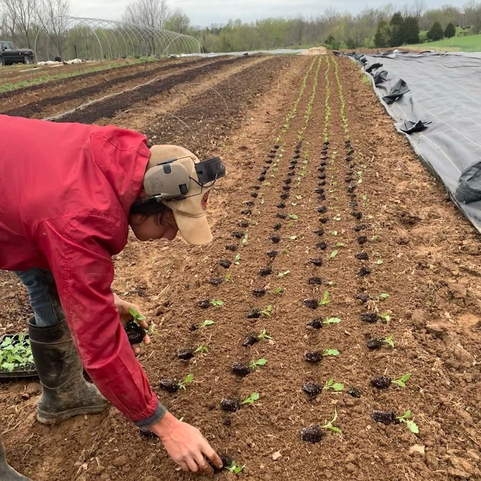

High Five Farm is a vegetable and herb growing operation committed to offering healthy and accessible non-certified organically grown produce to central Kentucky. We are guided by our beliefs in simplicity, community supported self-sufficiency, service, and ecological stewardship. In 2021 we are entering our 2nd season! Try our produce, available through our sliding scale CSA program and local farmers markets.
Farmer's Markets
We are stationed most weekends at farmer's markets across central Kentucky. Join our mailing list for information about when and where to find our booth each week.
Self-Service Station
For your convenience, we offer contactless pick-up in Louisville and Lexington. These locations are located on the porches of our CSA members.
Locally Grown
All of our vegetables are fresh, local, and tasty. That means our food is good for your health, good for the environment, and good for our communities!
CSA Share Seasons
Our harvests are affected by Kentucky's changing seasons. Because of this, we offer summer and fall shares. We promise you'll be pleased with the seasonal varieties we have to offer!

The Farmers and the Farm
Photo Credit: Asa Massie
High Five Farm is operated by Chelsea “Chelly” Barbour (she/her/hers) and Alex Rickman (he/him/his), two lovebirds who started this farm business in 2020. Alex enjoys country music, playing chess, and cooking. Chelly loves sending postcards, wildflower and tree identification, and tidying up. The farm dogs, Skeeter and Kira are bad workers, but excellent for morale! The name High Five Farm celebrates teamwork, community cooperation, and recognition of challenging physical work.
While we grow our produce following organic guidelines we are not currently certified organic growers. Organic certification is a long and expensive process that may or may not make sense for us in the future. We instead ask our community to trust our methods and transparency, and if you have any questions about our practices, just ask! Or come see for yourself!
Most of our farming practices are non-mechanized and rely on work by hand, as we try to minimize the use of fossil fuels on the farm. We rely on cover crops, locally sourced horse manure compost, and hay for our soil fertility instead of petrochemical fertilizers. We try to disturb the soil as little as possible in order to maintain a high soil organic matter content, reduce erosion, and retain water more efficiently. Floating row covers, insect netting, landscape fabric, and an intricate crop rotation are all utilized frequently to keep weeds and pests at bay instead of spraying insecticides and herbicides which inevitably will harm the ecosystem in and around the farm. Not only are we farmers, we aim to be stewards of the land that we live on and want to see it flourish as much as the crops.
High Five Farm operates on a low budget. We are slowly and steadily building our business using minimal infrastructure and simple equipment. Farm dreams include raising hogs, egg-layers, poultry, rabbits, and flowers in the next few seasons.
While we are currently operating as an LLC, we hope to shift to a cooperative/collective model as we connect with more folks in KY. We are seeking partners. We don’t know what this will look like exactly, but we do have ideas. We hope to work with people in our community interested in radically cooperative business strategies like community land ownership, consensus-based decision making, equipment sharing, skill trades, and collaborating with other growers to offer many different products.
We serve these cities!
Louisville
Lexington
Frankfort
Versailles
High Fives from Our Shareholders
We are living in a time in which a committment to eradicating systems of inequities and oppression is more crucial than ever before. Because of this, I will always choose High Five Farm and their dedication to agricultural and food justice. Their community-centered, collaborative values are so important.
Bridget K
We love the High Five Farm CSA because we like knowing that our veggies aren’t sprayed with dangerous, cancer-causing chemicals. We also love the fresh-from-the-farm taste. The flavors of the tomatoes and sweet potatoes remind me of my childhood when my grandfather had a garden in his back yard. Eating healthier is easier when it tastes so delicious!
Carol R
A big hooray for Chelsea and Alex’s High Five Farm CSA! This was my first time belonging to a CSA and I was very impressed. The weekly emails were so informative with photos of the weeks veggies, plus recipes to boot. High Five Farm is my choice from now on for the best vegetables grown in Kentucky.
Debby K
Join Our CSA Today
Enjoy 18 weeks of 7-10 fresh vegetables and herbs, grown by us for you!
The CSA model works well for folks who are excited to try new things! In 2021 we’re growing: Arugula, Basil, Beets, Beans, Bok Choy, Cabbage, Carrot, Cilantro, Collards, Cukes, Eggplant, Garlic, Kale, Kohlrabi, Lettuce, Mustard, Okra, Onion, Peppers, Potatoes, Radish, Rosemary, Sage, Scallions, Spinach, Summer Squash, Sweet Potatoes, Tomatoes, Turnips, Winter Squashes, Zucchini, Herbs, and Flowers.
Members of a CSA program are enthusiastically opting into the inherent risks involved in farming. Not every crop we attempt to grow will be a success. You will share in the failures and successes of the farm, thereby genuinely supporting local small agriculture.
We use a sliding scale payment plan. You will choose which payment you can reasonably afford. Use the guide below to honestly evaluate your income and assets and choose a payment plan that’s right for you. Folks interested in our CSA may pay weekly or a full season payment, however the full 18 week season commitment is requested. A deposit to secure their spot in our CSA. Learn more about sliding scales and how they work!
Option 1
$30 / week
Consider this rate if some or all of this list applies to you
I comfortably meet my basic needs (housing, food, utilities, transportation)
I am employed or do not need to work
I have expendable income for personal pleasures
I own my home or my rent is less than I can reasonably afford
This guide was adapted from Alexis J Cunningfolk. Learn more here.
Connect with us
We strive to engage with our community generously, kindly, and honestly. We always welcome and encourage feedback and promise to receive it with gratitude.


Bridget K
Debby K
{kind=link}